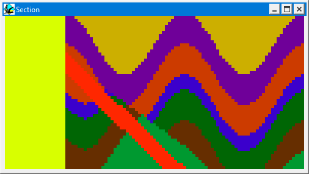
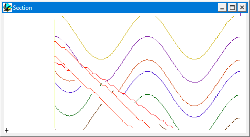

Sections
Sections can be viewed by choosing Section from the Geology menu, and display a vertical section through the geology.
There are two submenu options:
- Solid Colours which produce solid fill sections
- Lines sections.
The top left hand corner of the section will always be the origin of the currently defined block diagram) i.e. the upper south west corner).
The orientation of the section will be defined by the Section Declination parameter in the Geology Options Window.

In order to plot a mapping symbol on a Line Map, choose the symbol type and event from the Symbols menu and EVENT 1 and EVENT 2 menus, and then click anywhere within the area of the line map with the mouse.
In sections the symbols are oriented according to the true dip or plunge of the feature, and not the intersection angle with the section plane.
The Symbols menu allows you to choose from:
- Bedding which plots a symbol showing the dip and dip direction of the bedding at the position selected by mouse. This also gives dyke wall orientations.
- Foliation which plots a symbol showing the dip and dip direction of the foliation chosen from the EVENT 1 menu, at the position selected by mouse.
- Lineation which plots a symbol showing the plunge and plunge direction of the lineation chosen from the EVENT 1 menu, at the position selected by mouse.
- Bedding-Cleavage intersection lineation which plots a symbol showing the plunge and plunge direction of the intersection lineation defined by the foliation from the EVENT 1 menu and the local bedding orientation, at the position selected by mouse.
- Cleavage-Cleavage intersection intersection lineation which plots a symbol showing the plunge and plunge direction of the intersection lineation defined by the foliation from the EVENT 1 menu and the foliation from the EVENT 2 menu, at the position selected by mouse.
Some deformation events, such as folds and faults, have "inherent" planar/linear features (e.g. folds automatically generate penetrative fold axial planes and fold axis lineations).
In order to specify which foliation (or lineation) you wish to measure, select an event from the EVENT 1 menu. For Cl-Cl intersection lineations only also select a second foliation from the EVENT 2 menu. All of this orientation data can be saved as a text file for input to a plotting program by choosing Save Orientations from the File menu.
The orientation of layering of a dyke can be measured using the Bedding option.
The orientation of a fault can be measured using the Foliation option.
Interactively defining event XYZ positions
While a map is the front window, the XYZ coordinates of the deformation defined by EVENT 1 can be redefined by selecting Define XYZ position from the Define Menu, and clicking in the map window. The new XYZ position of that event will be defined by the XY position of the mouse click and the Z level of the map.

Noddy · open source under the MIT licence · Loop3D/noddy_qt